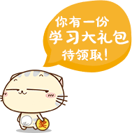

沪江网校
沪江网
CC课堂
英语
日语
法语
韩语
沪江社团
登录
注册
日语
英语
日语
法语
韩语
德语
西语
生词本
工具箱
全文翻译
语音朗读
贡献词条
产品大全
手机小D
划词
沪江社团
查单词
查例句
日 中
中 日
查 句
开启提示功能
英语词典
日语词典
法语词典
韩语词典
德语词典
西语词典
人名词典
语音朗读
全文翻译
生词本
例句本
词 库
查询历史
百宝箱
开心词场
听写酷
学习社刊
学习社团
沪江资讯
展开更多
问题反馈
小D小组
查询历史
勉強
学习
欲しい
追いかける
旅立ち
リ
咲かせる
駈けて
ほのか
もう
[清空历史]
[更多]
相关参考
问沪江小Q
Yahoo!辞書
Excite辞書
Weblio辞書
查Google
与
勉強
同音的词有：
与
勉強
同形的词有：
勉強(benkyou)
查看全部
勉強
日
沪江小DN4精品词汇，要记牢哦！
【べんきょう】
【benkyou】
◎
【名・自他・サ变/三类】
1.
用功学习，用功读书；学习知识，积累经验。
一夜漬けの
勉強
。/临阵磨枪。
化学を
勉強
する。/学习化学。
一生懸命に
勉強
する。/努力学习; 拼命用功；刻苦钻研。
熱心に中国語を
勉強
する。/努力学习中国话。
子どもの
勉強
をみてやる。/照看孩子的学习。
何をやるのも
勉強
だと思っています。/我认为干什么都是一种学习。
いい
勉強
になった。/取得了很好的经验； 又学到了一手儿； 学到了不少东西。
彼女は
勉強
がよくできる。/她学习好。
君の話を聞いていい
勉強
をした。/听了你这番话,我长了很多见识。
勉強
部屋。/书房；书斋；学习室。
勉強
時間。/学习时间；作功课时间。
受験
勉強
。/为考试而用功；考前复习。
2.
勤奋,热心（工作）。
こんな夜遅くまでお仕事とはずいぶん
勉強
ですね。/这么晚了还在工作,真热心啊！
3.
廉价,贱卖。（値引き。）
もっと
勉強
できないか/能再便宜些吗?
あの店は
勉強
する/那个商店贱卖。
更多详细释义
帮小D改进本词
详细释义
参考例句
沪江社团
JLPT备考
沪江日语社
日语外教课堂
零基础学日语
能力考宝典
开心词场
背单词
日语专八词汇
日语口译词汇
N1高分词汇三
N1高分词汇二
N1高分词汇一
N1精品词汇
N1核心语法
N1核心词汇
必背接续词
拟声拟态词
站内文章
手机小D
桌面小D
今日热词
相关搜索
まっしぐら
３分割
リキッドファンデ
コスメ
肩こり
まっさら
長束町
たいちそくりょく
げんりゅうヒューズ
ふりこ
ちょうしゅぐん
北里
日语网校
热门话题
沪江小D手机版，外语随身学！
沪江小D安卓版上线啦！
沪江网“广招”技术部人才
新版小D内测感受贴！
开心词场背词超爽
日语五十音
N1核心800词汇
N2核心800词汇
N3核心800词汇
N4基础词汇
N5基础词汇
相关工具
日语汉字输入技巧
日语输入法下载
提示

分享到
更多...
划词释义
英
日
法
韩
德
西
英
查词
日中
中日
查词
查词
查词
查词
我正在努力查询,请稍等...
即划即查
悬停发音
划词
精简版
设置
问题反馈
查词
|
复制
 我正在努力查询,请稍等...
我正在努力查询,请稍等...
勉強日沪江小DN4精品词汇，要记牢哦！
化学を勉強する。/学习化学。
一生懸命に勉強する。/努力学习; 拼命用功；刻苦钻研。
熱心に中国語を勉強する。/努力学习中国话。
子どもの勉強をみてやる。/照看孩子的学习。
何をやるのも勉強だと思っています。/我认为干什么都是一种学习。
いい勉強になった。/取得了很好的经验； 又学到了一手儿； 学到了不少东西。
彼女は勉強がよくできる。/她学习好。
君の話を聞いていい勉強をした。/听了你这番话,我长了很多见识。
勉強部屋。/书房；书斋；学习室。
勉強時間。/学习时间；作功课时间。
受験勉強。/为考试而用功；考前复习。
あの店は勉強する/那个商店贱卖。